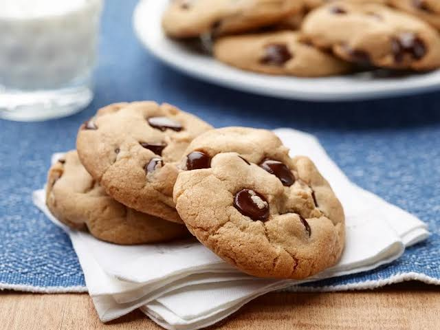

Classic Chocolate Chip Cookies

Description
These are the perfect soft and chewy chocolate chip cookies, a classic treat for any occasion.
Ingredients
- 2 1/4 cups all-purpose flour
- 1 tsp baking soda
- 1 tsp salt
- 1 cup (2 sticks) butter, softened
- 3/4 cup granulated sugar
- 3/4 cup packed brown sugar
- 1 tsp vanilla extract
- 2 large eggs
- 2 cups (12-oz bag) chocolate chips
Steps to make cookies
- Preheat oven to 375°F.
- Combine flour, baking soda, and salt in a small bowl.
- Beat butter, granulated sugar, brown sugar, and vanilla in a large mixer bowl.
- Add eggs one at a time, beating well after each addition.
- Gradually beat in flour mixture.
- Stir in chocolate chips.
- Drop by rounded tablespoon onto ungreased baking sheets.
- Bake for 9 to 11 minutes or until golden brown.
- Cool on baking sheets for 2 minutes; remove to wire racks to cool completely.
Home